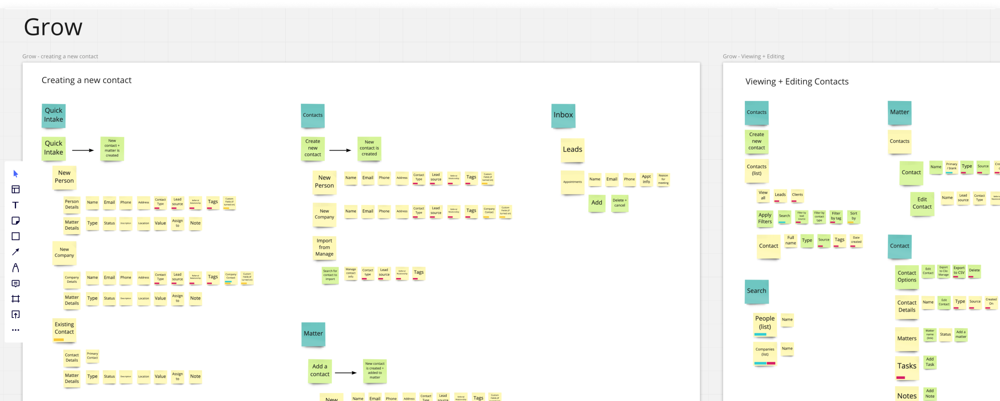
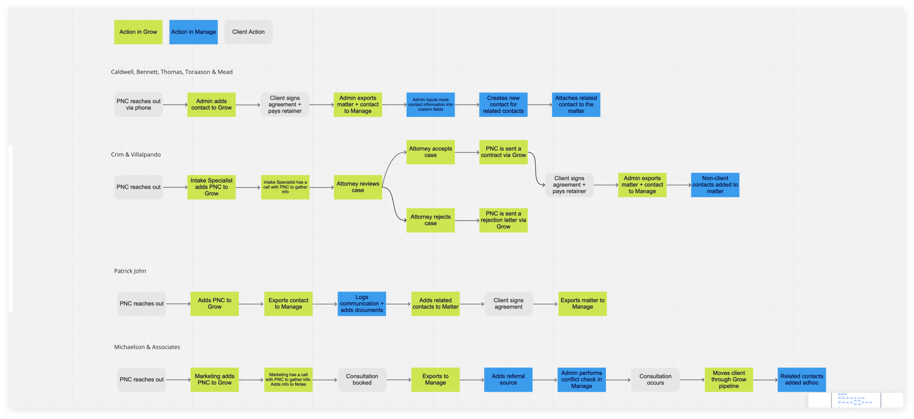
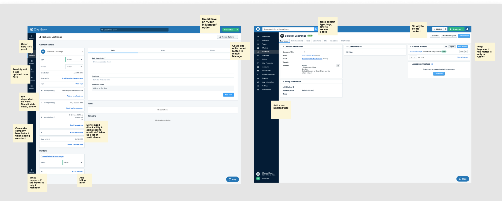
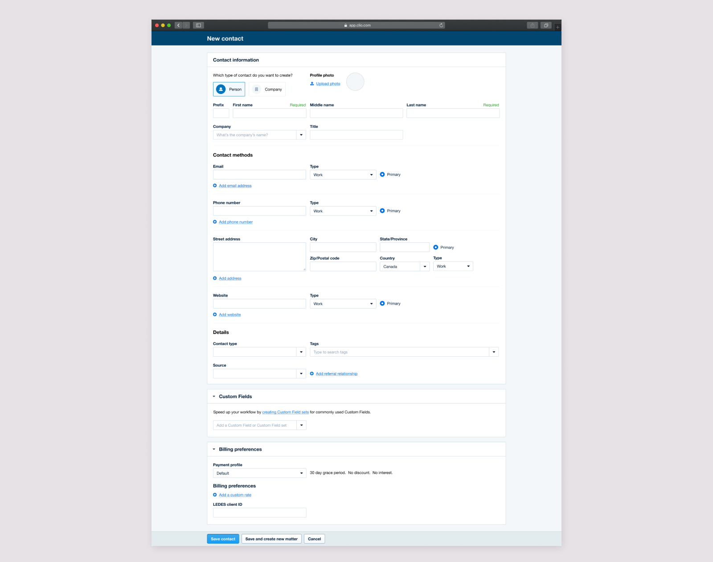
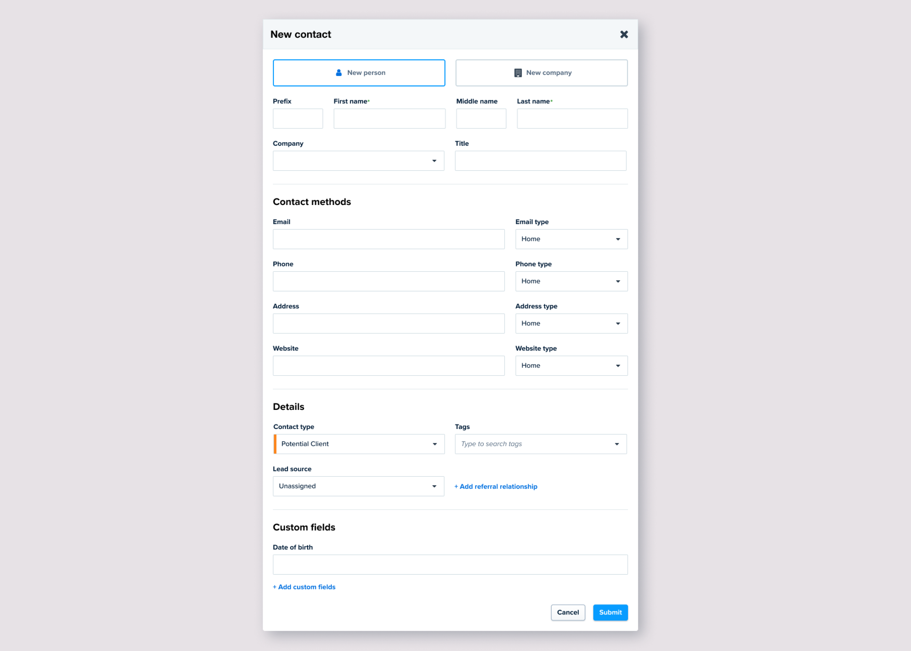
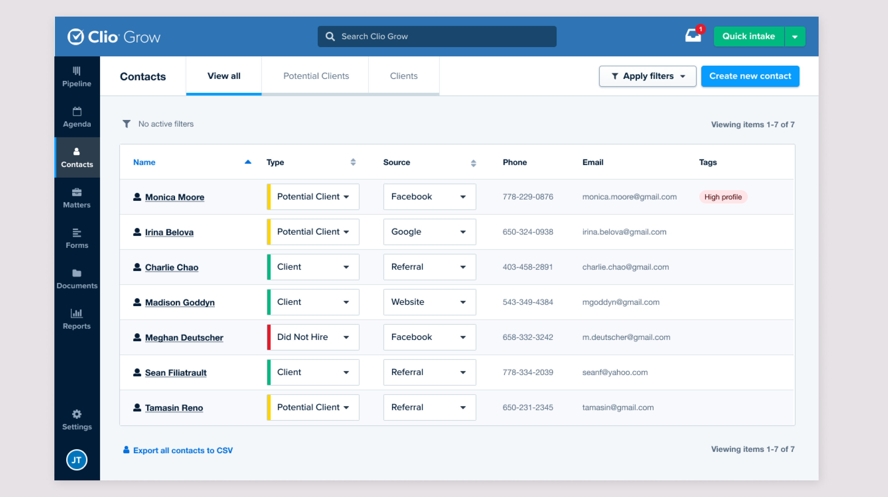
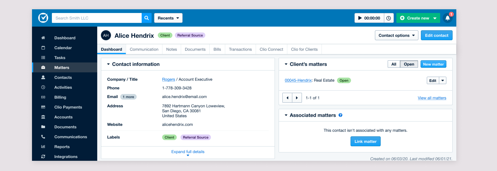
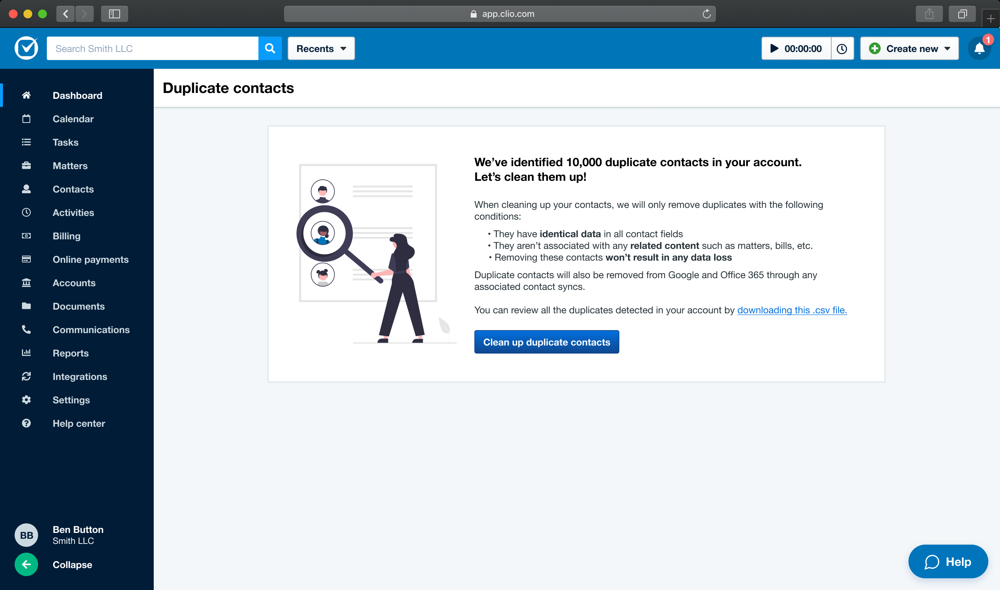
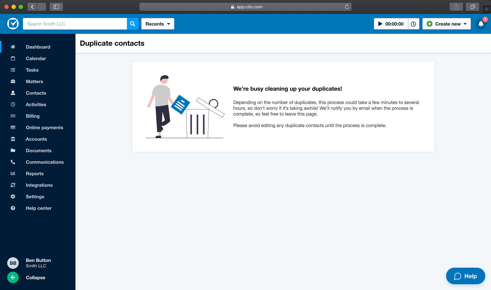

The business and customer problem
Clio Grow handles intake, while Clio Manage handles client and case management after intake. Although the products were sold as a suite, they still had separate contact databases.
Users manually exported data between products, created duplicates without realizing it, and couldn’t rely on Clio as one complete source of truth.
Contact unification was Clio Grow’s top requested feature with 214 votes.
30% of NPS detractors were related to Grow / Manage integration, with an estimated MRR impact above $40,000 USD per month.
Understand the system before redesigning it
I started by mapping every contact field and interface in both products. I then interviewed firms about how they created, updated, categorized, and moved contacts through their legal workflows.


The core problem
Updates in one product didn’t automatically appear in the other, forcing firms to export and re-import data to stay accurate.
Users often created another record because they didn’t know a contact already existed in the other product, increasing the risk of outdated or incomplete information.
Bring the experiences closer without pretending they’re identical
I critiqued the existing contact interfaces, explored low- and high-fidelity variations, and updated the two products so their contact information and ordering were consistent while each product retained its established interaction patterns.

Contact creation


Contact lists

Testing changed what unification needed to include
Users liked the idea of unified contacts, but the testing surfaced important risks around clutter and duplicates. The distinction between contact types and tags was also unclear.
Most users believed a unified contact system would make their work easier.
Users worried Manage would fill with contacts they didn’t need there.
Users expected the transition itself to generate duplicate records.
I explored a single labelling system to replace the confusing split between contact types and tags, combining preset, automatic, and customizable labels.

Scope the platform work into phases
I worked with the PM and Engineering Manager to prioritize the work. We split the broader unification effort into phases while also addressing duplicate contacts in parallel.
Unify basic contact information and remove manual export/import.
Feature parity, including labels and referral information.
Contact-management UX improvements such as filtering and deprioritization.
Contact deduplication to reduce the risk and workload created by duplicate data.
Use a smaller MVP to solve an urgent duplicate problem
We knew full unification would require robust duplicate handling. At the same time, a separate bug had already created large numbers of duplicates for customers.
A full review-and-merge UI would take significant time. For the MVP, we automated removal of safe, identical duplicates and let customers download a CSV if they wanted to review what had been detected.

Because cleanup could take a while, users weren’t trapped on the page while it ran.
